Passo a passo para criar o seu acesso, fazer as auditorias nos parques e lojas pelo celular e enviar para a administração validar.
Versão 2.0 · novembro de 2026
A Plataforma PEX é onde você registra a auditoria de cada parque ou loja: como foi o atendimento, a exposição dos produtos, o estoque, a limpeza e a estrutura. Tudo com fotos. Quando você termina e envia, a administração analisa, valida ou devolve para correção, e transforma cada problema encontrado em uma ação para o parque resolver.
O app funciona no navegador do celular e pode ser instalado na tela inicial, como um aplicativo comum. Tudo é salvo automaticamente enquanto você preenche, inclusive sem internet.
| Termo | O que significa |
|---|---|
| Auditoria | A visita a um parque ou loja. Tem 8 etapas e gera um código, por exemplo PEX-261111-MVME. |
| Etapa | Cada parte da auditoria: Cliente oculto, Identificação, Exposição, Estoque, Limpeza, Estrutura, Ocorrências e Enviar. |
| Item | Cada ponto a conferir dentro de uma etapa (ex.: "Lixeiras", "Extintor"). Você responde Conforme Não conforme ou N/A. |
| Eixo e nota | São 4 eixos: Atendimento, Organização, Auditoria (estoque) e Estrutura. Cada um recebe uma nota de 0 a 5 com justificativa. |
| Índice PEX | A nota geral do parque, calculada a partir das notas dos eixos. |
| Ocorrência | Um problema que precisa de correção. Você descreve onde é, o que é e a gravidade. Depois a administração cria a ação para resolver. |
| Cliente oculto | A primeira parte da visita, em que você chega como cliente comum, sem dizer que é auditor. |
1Abra o link que você recebeu: danillohdf.github.io/pex
2Na tela de entrada, toque em Criar acesso (embaixo, à esquerda).
3Preencha:
4Toque em Criar acesso.
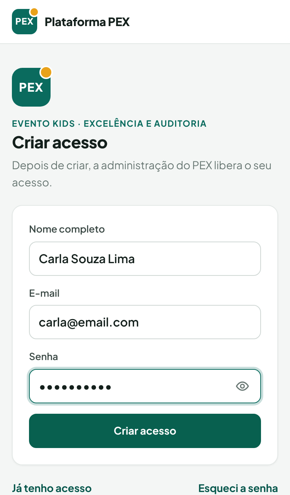
Depois de criar o acesso, aparece a tela "Quase lá". Isso é normal: por segurança, a administração do PEX precisa liberar cada pessoa antes do primeiro uso.
Avise a administração que você criou o acesso. Quando ela liberar, toque em Já fui liberado e o app abre.
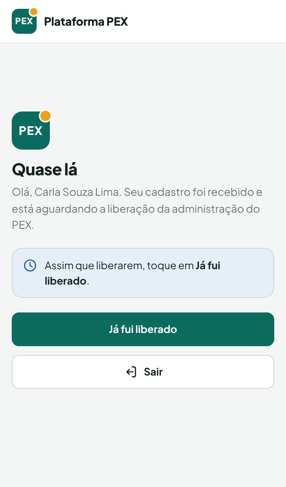
Instalar deixa o PEX com ícone na tela inicial, abre mais rápido e funciona melhor sem internet. Faça isso uma vez só.
| Celular | Como instalar |
|---|---|
| iPhone (Safari) | Abra o link no Safari › toque no botão Compartilhar (quadrado com seta para cima) › Adicionar à Tela de Início › Adicionar. |
| Android (Chrome) | Abra o link no Chrome › toque no menu ⋮ (canto de cima) › Instalar app ou Adicionar à tela inicial › confirme. |
Embaixo da tela ficam os três atalhos do auditor:
No alto, à direita:
Você só vê as auditorias que você fez. As dos outros auditores não aparecem para você.
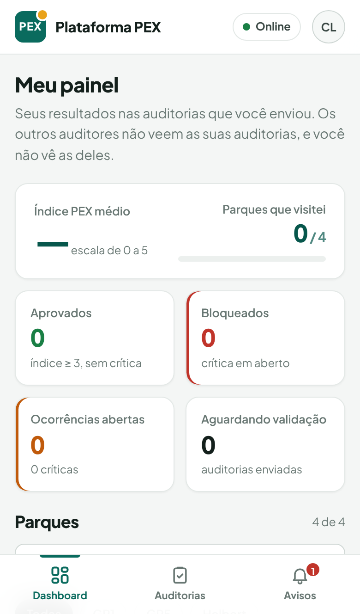
1Toque em Auditorias na barra de baixo.
2Em Nova auditoria, escolha o parque ou loja na lista.
3Toque em Iniciar auditoria.
A auditoria aparece em Minhas auditorias com o selo Em preenchimento. Se você sair no meio, é só tocar nela para continuar de onde parou.
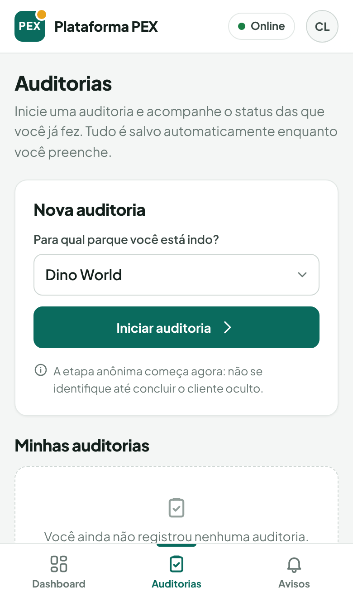
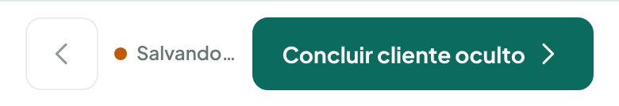
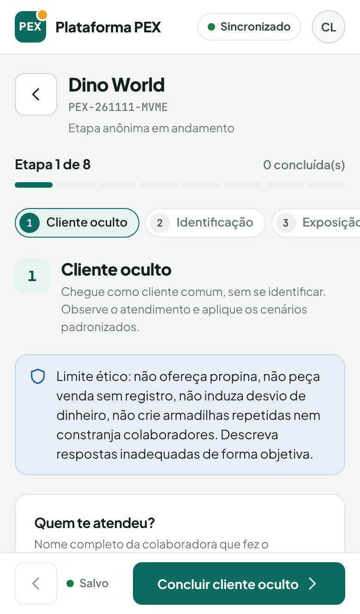
| Conforme | Está certo, como deveria estar. |
| Não conforme | Tem problema. Escreva o que viu na observação e tire foto. |
| N/A | Não se aplica a este parque (ex.: não tem túnel de fitas). Escreva o motivo: N/A sem justificativa impede o envio. |
Para fotografar, toque no quadrado Foto: o celular abre a câmera (ou a galeria). Para apagar uma foto, toque no × em cima dela.
Em Não conforme aparece também o botão Abrir ocorrência. Use quando o problema precisar de correção: ele já leva o item, a observação e as fotos para a etapa Ocorrências.
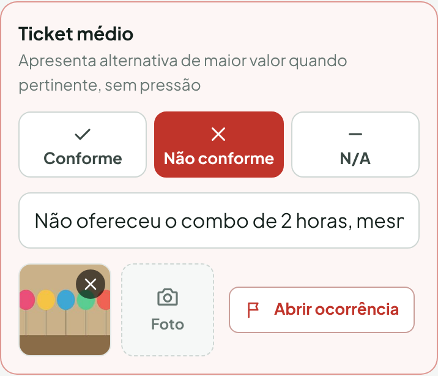
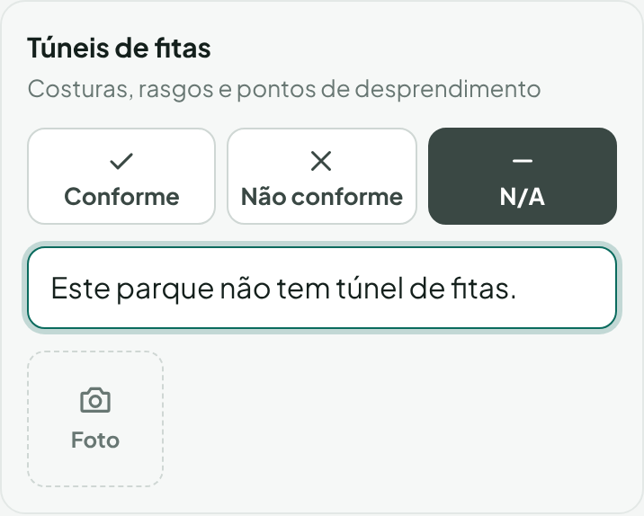
No fim das etapas Cliente oculto, Estoque, Limpeza e Estrutura você dá uma nota para o eixo inteiro, olhando tudo o que respondeu. Depois de tocar na nota, escreva a justificativa: ela é obrigatória.
| Nota | Quer dizer |
|---|---|
| 0 | Crítico: falha grave ou nada em ordem |
| 1 | Muito baixo: várias falhas, correção urgente |
| 2 | Abaixo: falhas frequentes |
| 3 | Adequado: atende, com pontos a melhorar |
| 4 | Muito bom: padrão elevado, desvios pontuais |
| 5 | Excelente: sem desvios |
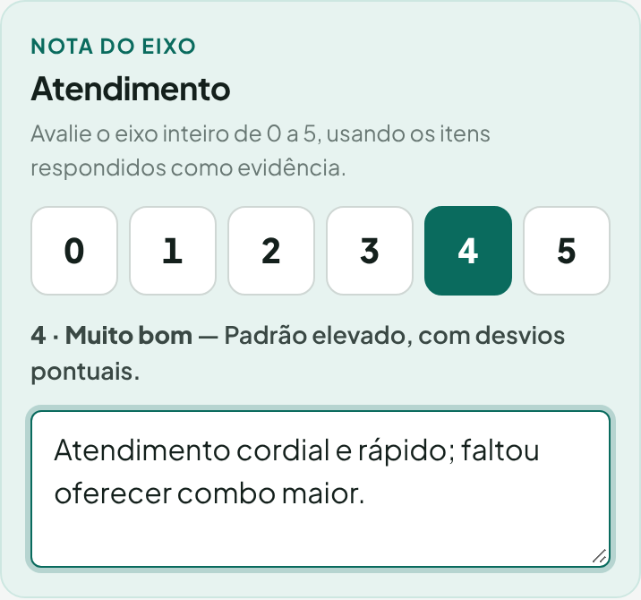
Chegue como cliente comum, sem se identificar. Observe o atendimento e aplique os cenários padronizados (dúvida de preço, comparação de combos, pagamento, pedido fora da regra).
Em Quem te atendeu?, escreva o nome completo de cada colaboradora (pelo crachá, ou perguntando de forma natural). Se mais de uma pessoa atendeu, toque em Adicionar outra pessoa.
Responda os itens, dê a nota de Atendimento e toque em Concluir cliente oculto.
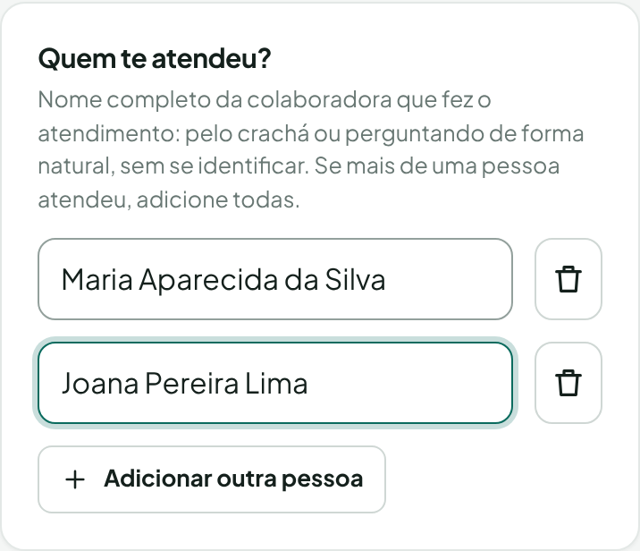
Agora sim, apresente sua credencial e avise o responsável que a visita faz parte do PEX. Toque em Encerrar cliente oculto e me identificar (o horário fica registrado) e escreva o nome do líder ou responsável presente.
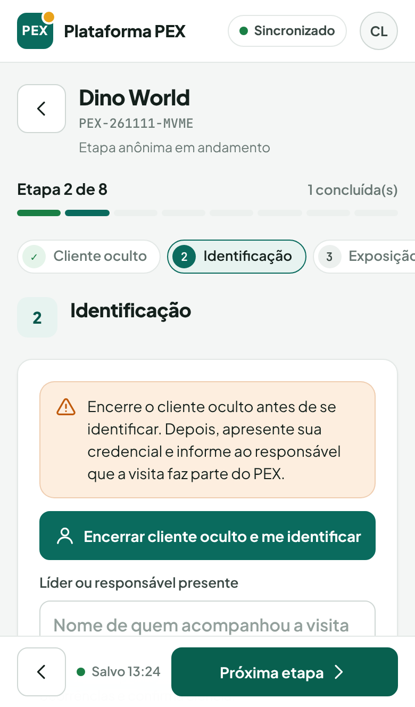
Confira balões, livros, chaveiros, slimes e demais produtos expostos: presença, variedade, organização e conservação.
Fotos obrigatórias (o item fica verde quando tem foto):
Se houver outro local de exposição com problema, use Adicionar outro local (veja Limpeza).
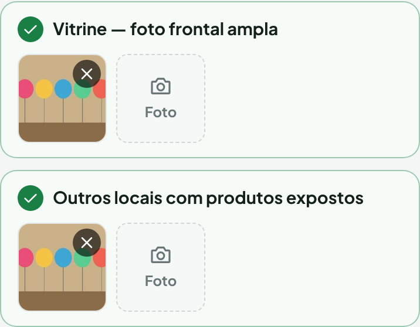
Conte fisicamente cada produto e preencha duas quantidades:
O app soma o Total na loja. Se um produto não existe no parque, coloque 0. Produto que não está na lista? Toque em Outros: produto que não está na lista e escreva o nome.
Avarias, vencidos ou sem identificação: escreva na observação do produto e fotografe. Depois responda os itens de armazenamento, tire as 2 fotos obrigatórias (visão geral e detalhe) e dê a nota de Auditoria.
Você não vê o saldo do sistema. A comparação com o sistema é feita pela administração.
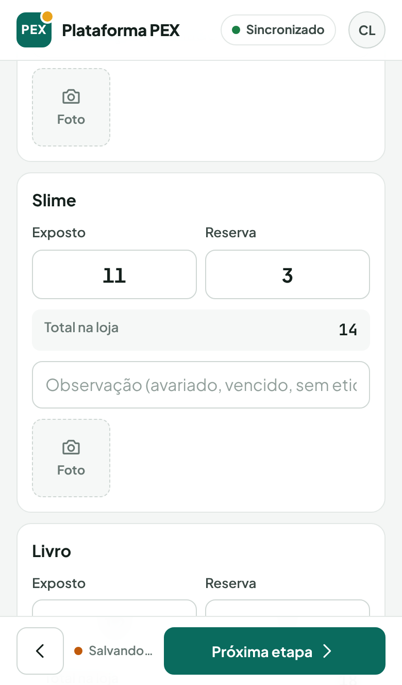
Registre a condição no momento da visita: pisos e carpete, móveis e balcão, computadores, lixeiras, áreas internas e áreas de apoio. Tire as 4 fotos obrigatórias (frente, recepção, piso, áreas internas) e dê a nota de Organização.
Encontrou um ponto que não está na lista (ex.: "Cercado da entrada")? Toque em Adicionar outro local, escreva o nome do local, responda Conforme ou Não conforme, descreva e tire foto. Isso existe nas etapas Exposição, Limpeza e Estrutura.
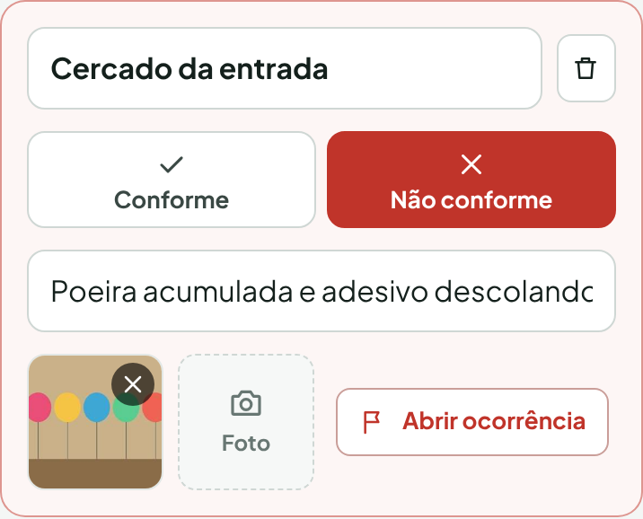
Inspeção visual, sem desmontar nada: fachada, recepção, cercados e portões, redes, ferragens, escorregadores, torres, piscina de bolinhas, tatames, fixação dos brinquedos, espumas, parte elétrica, quadro de distribuição, computadores, iluminação, extintor e saída de emergência.
Se o parque tem infláveis, marque Este parque tem infláveis, e aparecem os itens deles.
Dê a nota de Estrutura.
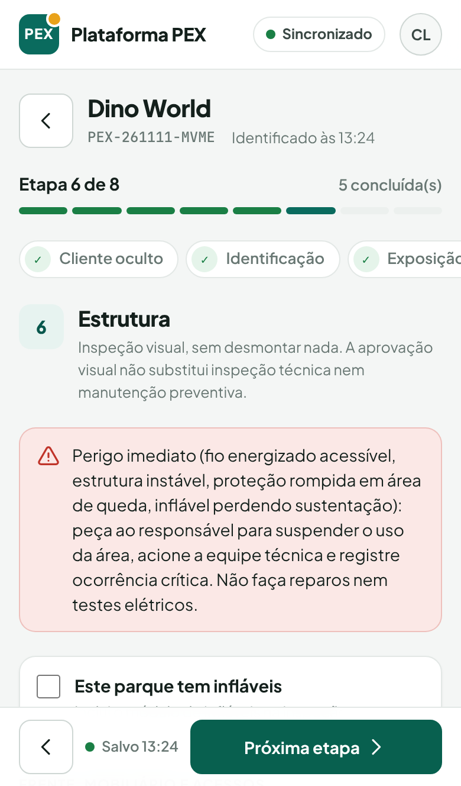
Aqui ficam todos os problemas que precisam de correção: os que você abriu pelos itens (botão Abrir ocorrência) e outros que quiser acrescentar com Nova ocorrência.
Para cada ocorrência, preencha:
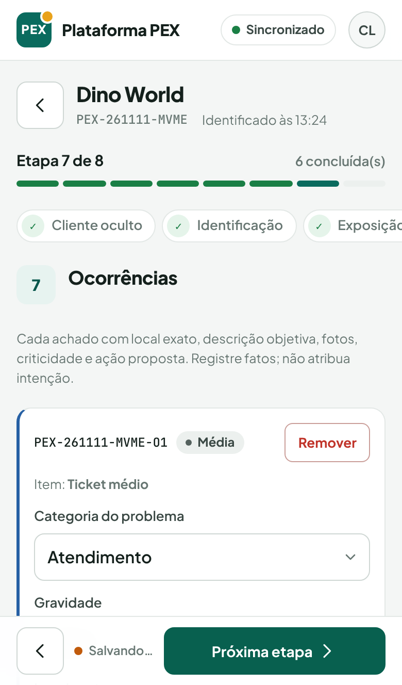
Na última etapa o app mostra o que você registrou, etapa por etapa. Toque em cada etapa para revisar. As que estiverem com pendência aparecem marcadas.
Embaixo fica a lista de conferência. O botão Enviar para validação só funciona quando todos os itens estiverem verdes:
Se algo ficar vermelho, toque na etapa correspondente, complete e volte.
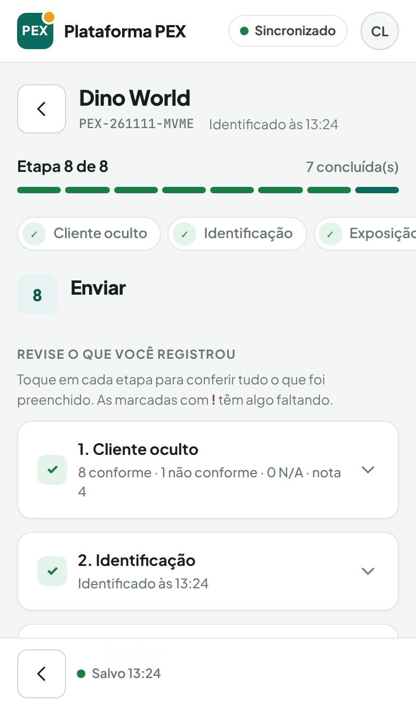
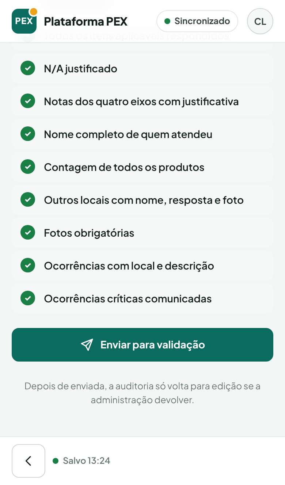
Ao enviar, abre o relatório da auditoria: índice PEX, notas dos eixos, respostas, fotos e ocorrências. Você pode gerar o PDF pelo botão no topo.
Em Auditorias › Minhas auditorias, cada uma mostra a situação:
| Em preenchimento | Ainda não enviada. Toque para continuar. |
| Aguardando validação | Enviada. A administração ainda vai analisar. |
| Em validação | A administração está analisando. |
| Devolvida ao auditor | Precisa de correção sua (capítulo 10). |
| Ação corretiva | Validada, com ações em andamento no parque. |
| Validado / Encerrado | Concluída pela administração. |
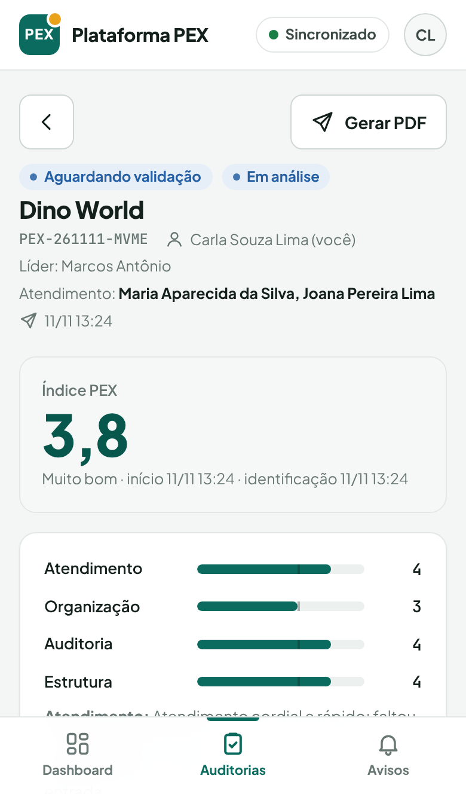
Se a administração precisar de algo a mais (uma foto que faltou, um dado a corrigir), ela devolve a auditoria. Você recebe um aviso, e a auditoria aparece com o selo Devolvida ao auditor.
1Toque no aviso ou na auditoria.
2No topo aparece em laranja o que a administração pediu.
3Corrija o que foi pedido e vá até Enviar para reenviar.
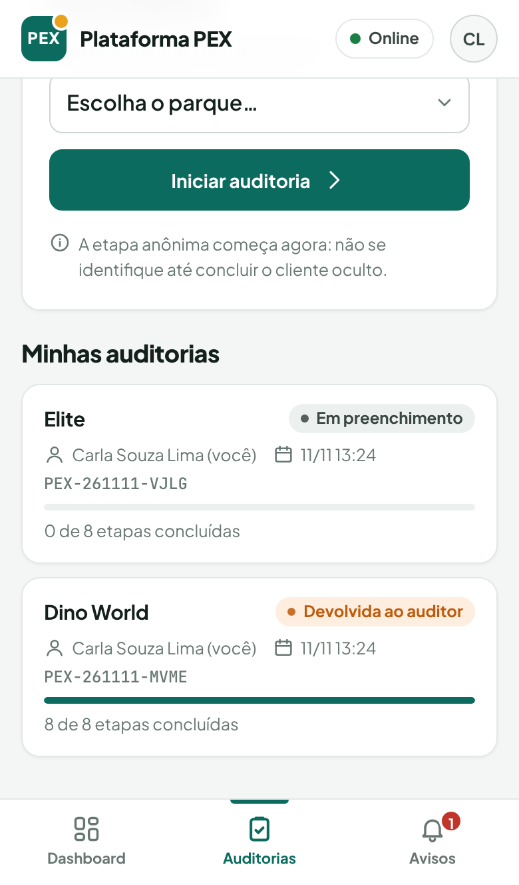
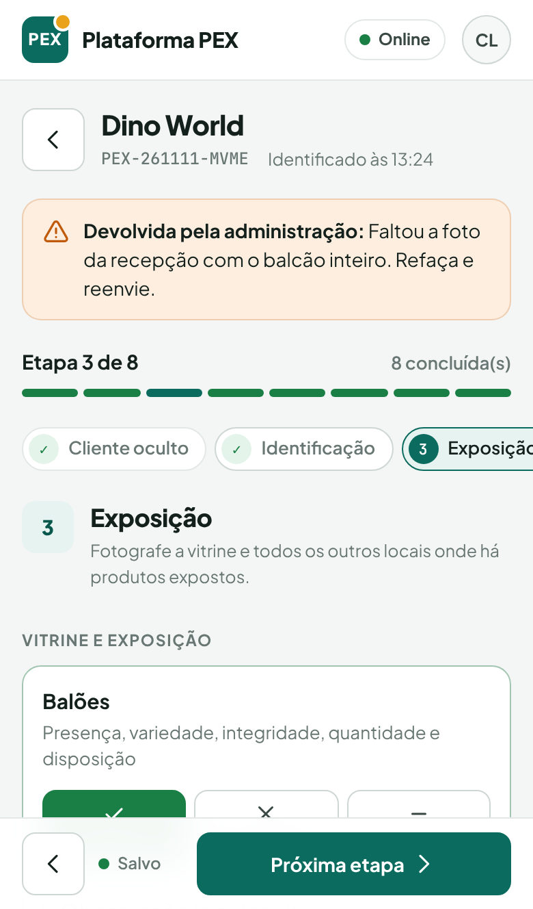
Em Avisos chegam as mensagens sobre as suas auditorias, por exemplo quando uma é devolvida para correção. Os avisos novos ficam destacados, com um ponto verde, e o número vermelho na barra de baixo mostra quantos você não leu.
Os avisos aparecem quando o app está aberto. Abra o PEX de vez em quando para conferir.
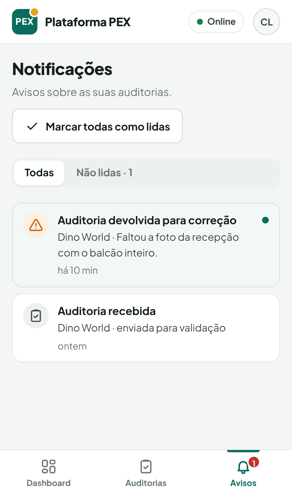
Muitos parques têm sinal fraco. Pode continuar normalmente: o app guarda tudo no celular, inclusive as fotos, e envia sozinho quando a internet voltar. Dá até para enviar a auditoria sem sinal: ela sobe assim que o celular conectar.
Fique de olho no indicador no alto da tela:
| Online / Sincronizado | Tudo já está no servidor. |
| Offline · 1 pendente(s) | Sem internet. As alterações estão guardadas no celular. |
| Sincronizando… | A internet voltou e o app está enviando. |
| Erro de sincronização | Toque no indicador para tentar de novo. Se continuar, avise a administração. |
No rodapé da auditoria aparece Salvo no aparelho enquanto estiver sem internet.
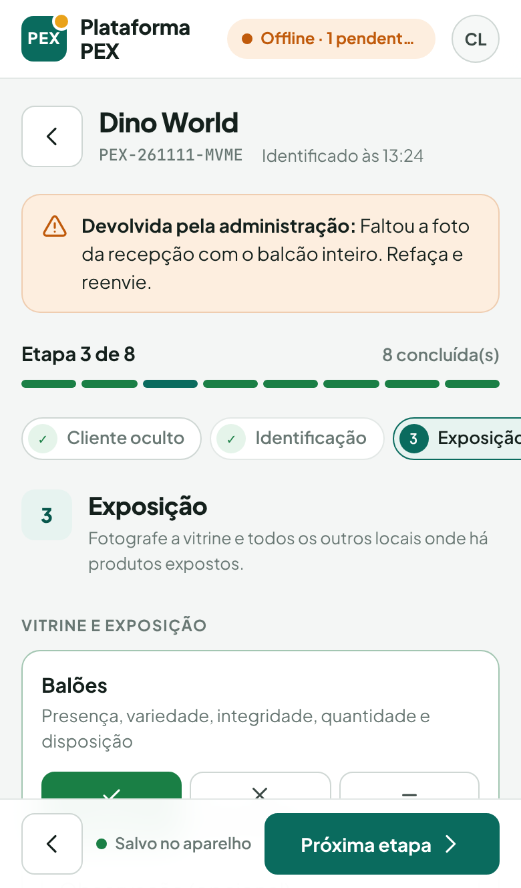
| Situação | O que fazer |
|---|---|
| Criei o acesso e o app não abre | A administração ainda não liberou. Peça a liberação e toque em Já fui liberado. |
| Esqueci a senha | Na tela Entrar, toque em Esqueci a senha e siga o e-mail. Se não chegar, peça uma senha provisória à administração. |
| O botão Enviar não funciona | Algum item da lista de conferência está vermelho. Complete o que falta (muitas vezes é uma foto obrigatória, uma nota sem justificativa ou um N/A sem motivo). |
| Apareceu "Auditoria incompleta, não pode ser enviada" | O servidor encontrou algo faltando. A mensagem diz o quê. Complete e envie de novo; a auditoria continua salva. |
| Fechei o app no meio da auditoria | Nada se perde. Abra Auditorias e toque na que está Em preenchimento. |
| Respondi errado | Antes de enviar, toque em outra resposta ou apague o texto e escreva de novo. Depois de enviada, só se a administração devolver. |
| A câmera não abre | Permita o acesso à câmera para o navegador (ou para o app PEX) nas configurações do celular. |
| Parque ou loja não aparece na lista | Peça à administração para cadastrar. |
| Estou sem internet | Continue normalmente (capítulo 12). Não saia da conta até aparecer Sincronizado. |